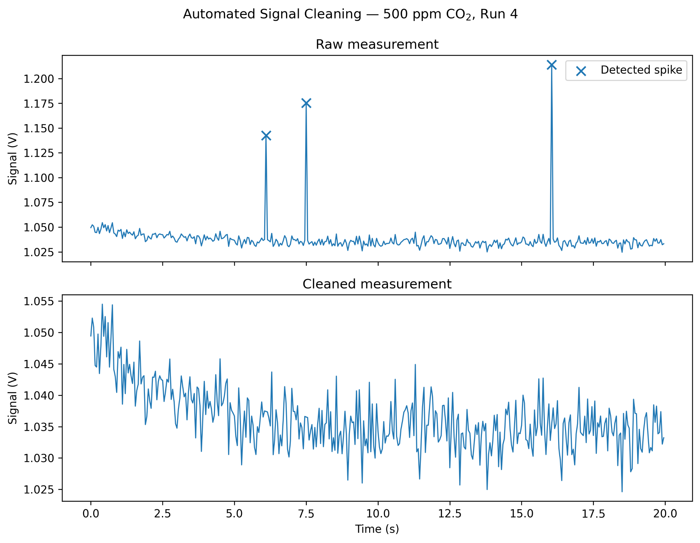
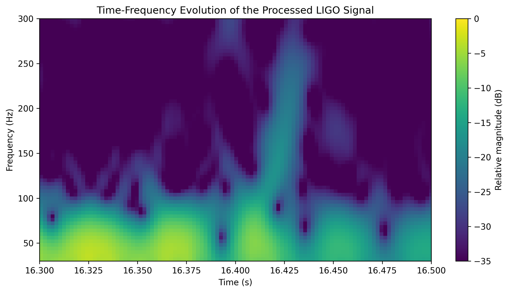
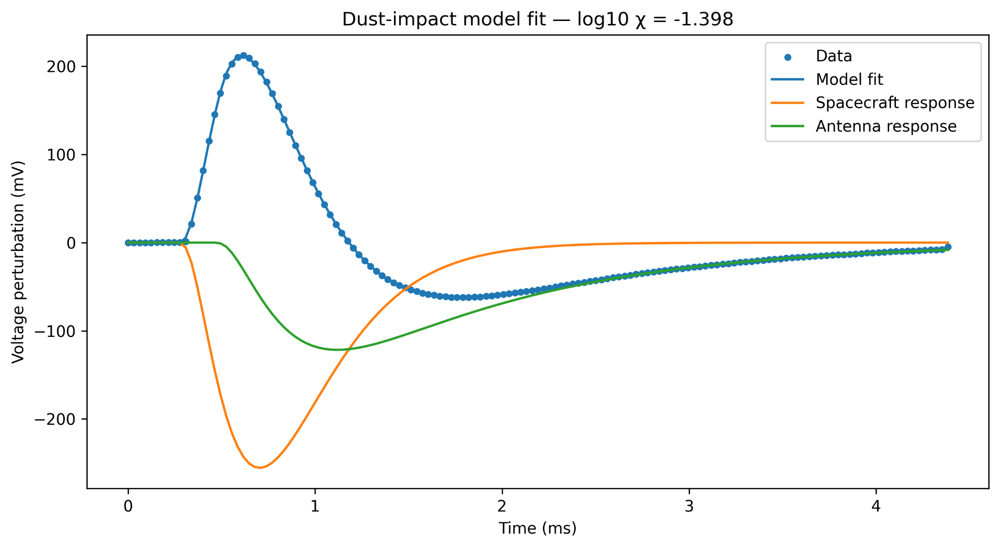

Scientific data analysis and Python
Turning complex scientific data into useful results.
We are a small, independent UK consultancy that helps researchers, engineers and technical businesses with awkward datasets.
How we work: one point of contact for scoping, scheduling and invoicing, and a PhD-level scientist doing the technical work on every project.
PhD-level science
Photonics, University of Southampton
MSc, Space Physics
Scientific signal processing and modelling
Data we work with
Experimental sensors, spectroscopy, physiological PPG signals, time-series data and physical models
Selected work

Scientific data cleaning and calibration
Thirty inconsistent experimental files turned into a validated dataset, automated quality-control workflow and reproducible calibration analysis.
Result: 30 inconsistent files consolidated into one validated, QC-flagged dataset ready for calibration analysis.

LIGO gravitational-wave signal processing
Real detector data processed using whitening, digital filtering, spectral analysis and detector time alignment.
Result: recovered the transient's timing to within 4.64 ms across the two detectors.

Solar Orbiter dust-impact modelling
Spacecraft telemetry processed and fitted with a physical model, then scaled to 1,920 events with automated quality control and population analysis.
Result: 1,920 waveforms fitted automatically, yielding 1,550 quality-controlled events for population-level analysis.
Services
Help with scientific and technical data.
We are most useful when a dataset is awkward, repetitive or technically specialised and needs a clear, reproducible workflow rather than a one-off spreadsheet fix.
Data cleaning
Cleaning, validating and restructuring CSV, Excel, HDF5 and scientific data files, including noisy experimental and physiological time-series signals, with clear quality-control checks.
Analysis and visualisation
Signal processing, model fitting, statistical analysis and technical figures for research and engineering datasets, including cleaning and analysing physiological PPG signals.
Python automation
Reusable scripts for repetitive data processing, file handling, analysis and reporting workflows.
Team
A small team, with each of us doing what we do best.
Keeping the team small means you always know who you are dealing with. One of us looks after you and the running of each project; the other does the science.
Freya Jensen
Owner · Client relations and administration
Freya runs the business and is your first point of contact. She handles enquiries, scoping and quotes, scheduling, contracts and invoicing, and keeps each project on track from first email to final delivery.
Amalie Gjelsvik
Lead Scientist
Amalie carries out the technical work on every project. She is a PhD researcher in optics and photonics at the University of Southampton, with an MSc in Space Physics and professional experience cleaning and analysing physiological PPG signals, including noisy real-world measurements.
Her work covers experimental data, spectroscopy, signal processing, physical modelling and scientific programming.
Core tools: Python, NumPy, pandas, SciPy · HDF5, CDF, CSV, Excel · signal processing and filtering · nonlinear optimisation and model fitting · scientific visualisation
Contact
Have data that needs sorting out?
We take on small scientific-data projects, Python analysis and workflow automation.
How it works: send us a short description of your dataset and what you would like to get out of it. Freya will reply to ask any follow-up questions or arrange a short call with Amalie if that is easier. Once the scope is clear, we will agree the deliverable and price with you before any work starts.